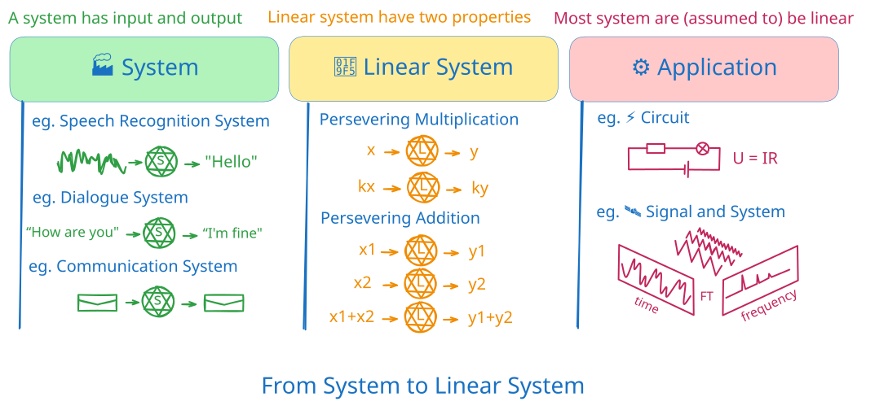

Linear System
Roadmap

系统：有输入，有输出。比如输入一段语言，系统进行语音辨识，输出对应的问题。
线性系统：线性可加性。也就是常见的$f(k_1x_1+k_2x_2) = k_1f(x_1)+k_2f(x_2)$。
应用：线性系统有良好的性质，在日常生活中经常使用，也对各个专业领域很有帮助。
Reference
[1]
Linear Algebra Lecture 1: What are we going to learn?